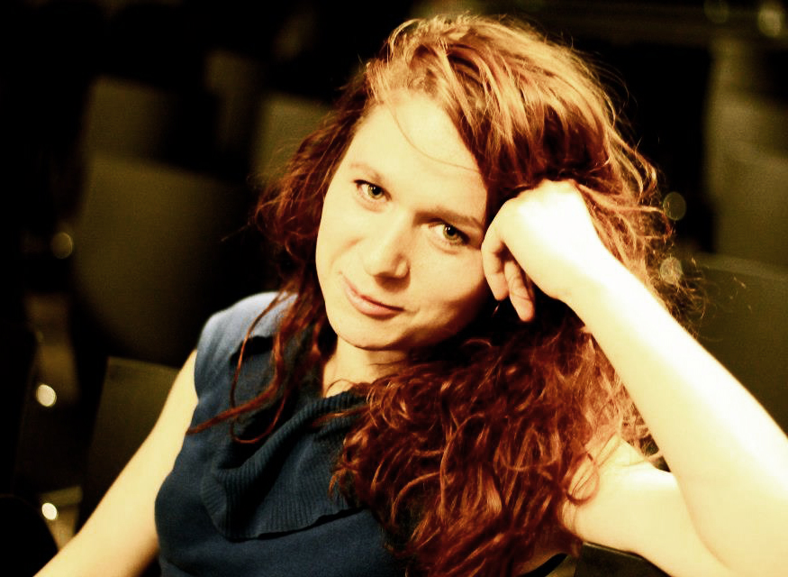

Vita Malahova is an actress and theatre-maker.
She was educated as a physical theatre performer and her theater tradition comes from group work and improvisation theatre.
Vita holds Bachelor of Physical Theater at the Accademia Teatro Dimitri (CH) and is a founder of the physical theatre duo I Patom Theatre.
She works internationally with different artists and theatre companies since 2012.
Currently Vita works with I Patom Theatre and gives workshops in physical theatre.

SELECTED PERFORMANCES
- Organiser - ASK THE BREAD: collaboration with residency canters RUCKA, SERDE, Riga Circus (LV) 2019
- Performer - site specific project LIVETS VAND, directed by Magnus Errboe, 17 shows (DK) 2019
- Actress and Deviser - I Ran and Got Tired, directed by Magnus Errboe, (DK) performing since 2017
- Actress and Deviser - children play Fiabe Colorate, by I Patom Theatre, (IT) performing since 2018
- Performer - CLASTIC Residency: exchange on the theme of cultural heritage, Torino (IT) 2018
- Actress - La Prova : artistic residency, for the project Theatrum Mundi, Athens (GR) 2017
- Actress - Antigone -frammenti di un mito, by Christian Seiler, in Locarno, Lugano, Bien, Zurich (CH) 2016
- Performer and Deviser - Move for Life // By Morke - Hakkehuset, director Magnus Errboe, (DK) 2016
- Actress - Falling directed by Lilo Baur, 15 shows between Swiss and Italy, (CH) 2016
- Actress - Satyricon of Bruno Maderna, Accademia Teatro Dimitri production, Lugano (CH), 2015
- Performer - Mendelssohn reload by Project Alberi, LAC Lugano (CH), 2014
- Performer - EXPO Milano - Centro Internazionale di Scultura directed by Lilian Frei (IT), 2014
- Performer - Im anfang war... directed by Lilian Frei, Kloster Kappeln (CH), 2014
- Actress - Metamorphoses Studio 1 - H.O.S.T. Astragali Teatro, Lecce (IT), 2013
- Actress and Deviser - Picaresque, by Retrograd, directed by Magnus Errobe, Cph (DK) 2013
- Actress and Deviser - Sleep Walk, by Arrieregarden, directed by Magnus Errobe (DK)2013
- Actress and Deviser - Nobody’s home, by Arrieregarden (DK)2012
Copyright ©2019 Vita Malahova. All rights reserved.